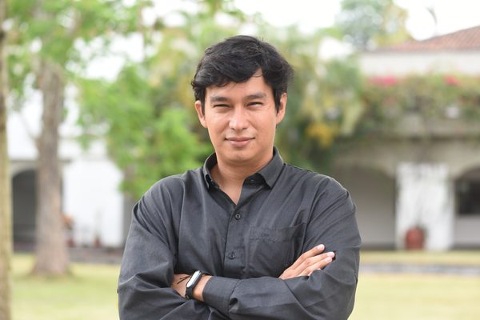
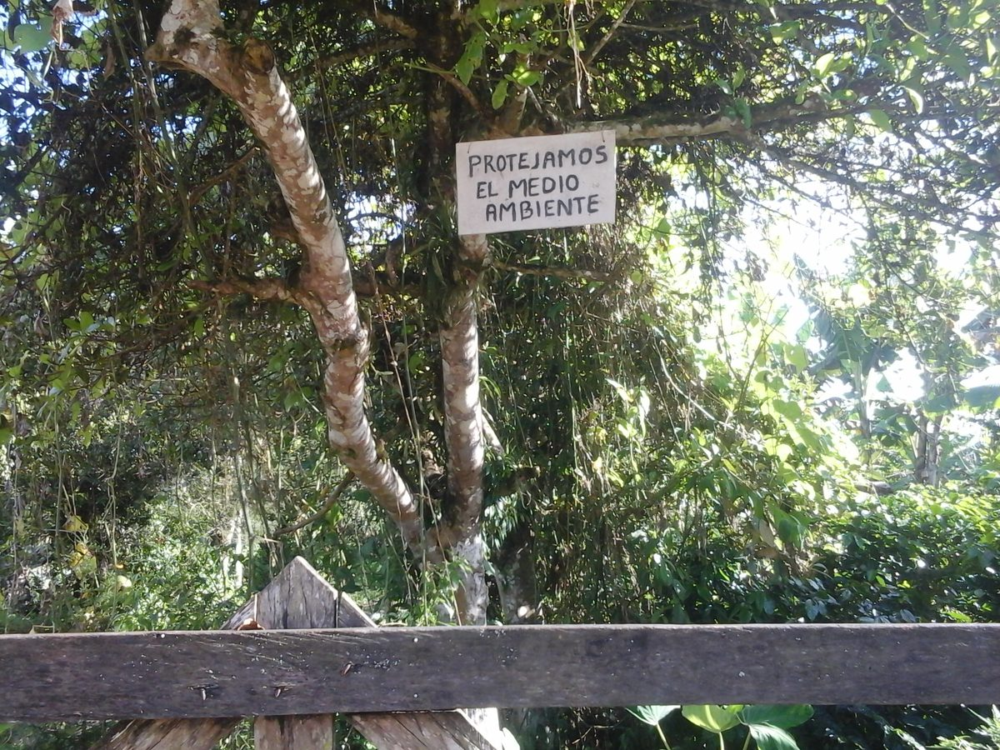
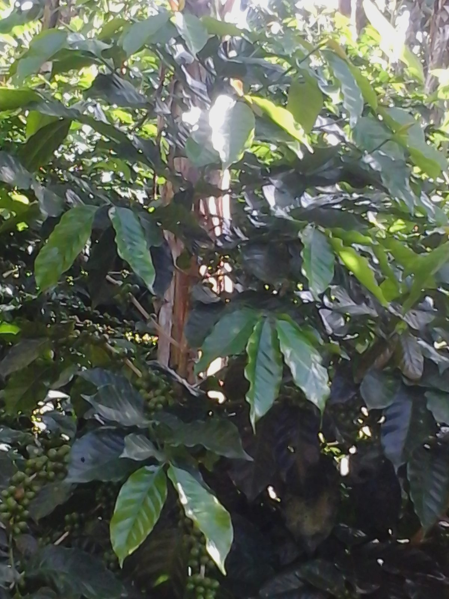
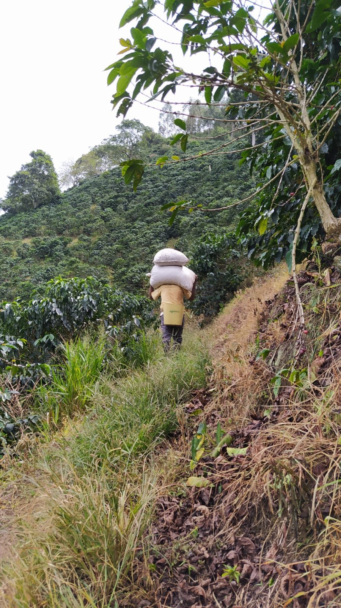

3 direcciones estéticas — sitio completo
Cada opción muestra cómo se vería el Home (hero), Publications (lista) y Field Work/News (galería) con una paleta y tipografía coherente en todo el sitio. Elige una dirección completa, o dime qué mezclar.
Opción A
Editorial Serif — estilo revista/literario académico
Tipografía serif dominante (Fraunces), acento terracota en vez de teal, sin cajas ni sombras — solo jerarquía tipográfica y líneas finas. Fotos con grado cálido sutil. Evoca publicaciones como The Chronicle of Higher Education o revistas literarias académicas. Muy silencioso y elegante, pero requiere confiar en la tipografía sola para jerarquía.
PhD Economist · Postdoctoral Researcher
Alexander Buriticá Casanova
Alliance of Bioversity International and CIAT — Cali, Colombia
I study when access to agricultural technology actually improves farmers' lives. My work applies impact evaluation and causal inference to sustainable agriculture, food security, and post-conflict rural development.
Download CV → · 374 citations, h-index 5

Publications
2026
Community seed banks deliver social cohesion and peacebuilding in conflict-affected contexts
Peace and Sustainability
2026
Technology access without impact? Ecuador's input subsidy program for rice
Cogent Food & Agriculture
2025
Sweating bullets: Heat, high-stakes evaluations, and the role of incentives
Environmental and Resource Economics
Field Work
In the Field




Opción B
Modern Minimal — versión refinada de tu estilo actual
Muy cercano a tu diseño actual, pero más intensificado: acento índigo en vez de teal, cards con sombra suave y esquinas más redondeadas, tags de color, tipografía sans-serif consistente en todo. Es la opción de menor riesgo — se siente como una versión "pulida" de lo que ya tienes, no un cambio radical.
Impact Evaluation
Agricultural Economics
Alexander Buriticá Casanova
PhD Economist · Alliance of Bioversity International and CIAT
I study when access to agricultural technology actually improves farmers' lives. My work applies impact evaluation and causal inference to sustainable agriculture, food security, and post-conflict rural development.
Publications

Community seed banks deliver social cohesion and peacebuilding
Peace and Sustainability

Technology access without impact? Ecuador's input subsidy program
Cogent Food & Agriculture
Field Work
Opción C
Warm Field Notes — la fotografía de campo como identidad central
Aprovecha al máximo tus 38 fotos de campo: paleta cálida (crema + verde oliva en vez de teal), foto de portada grande arriba del hero, foto de perfil circular superpuesta estilo "field notebook", grid de galería con grado cálido. Se siente más narrativo y personal — como el diario de un investigador de campo, sin perder seriedad académica.

Postdoctoral Researcher
Alexander Buriticá Casanova
Alliance of Bioversity International and CIAT · Cali, Colombia
I study when access to agricultural technology actually improves farmers' lives, applying impact evaluation to sustainable agriculture and post-conflict rural development.
Publications
2026 · NewCommunity seed banks deliver social cohesion and peacebuilding
Peace and Sustainability
2026Technology access without impact? Ecuador's input subsidy program
Cogent Food & Agriculture
Field Work
In the Field
Colombia
Coffee
Caquetá
Surveys
💡 Dime la letra (A, B o C) para aplicarla a todo el sitio, o combina elementos: ej. "paleta de C con el layout de hero de B".